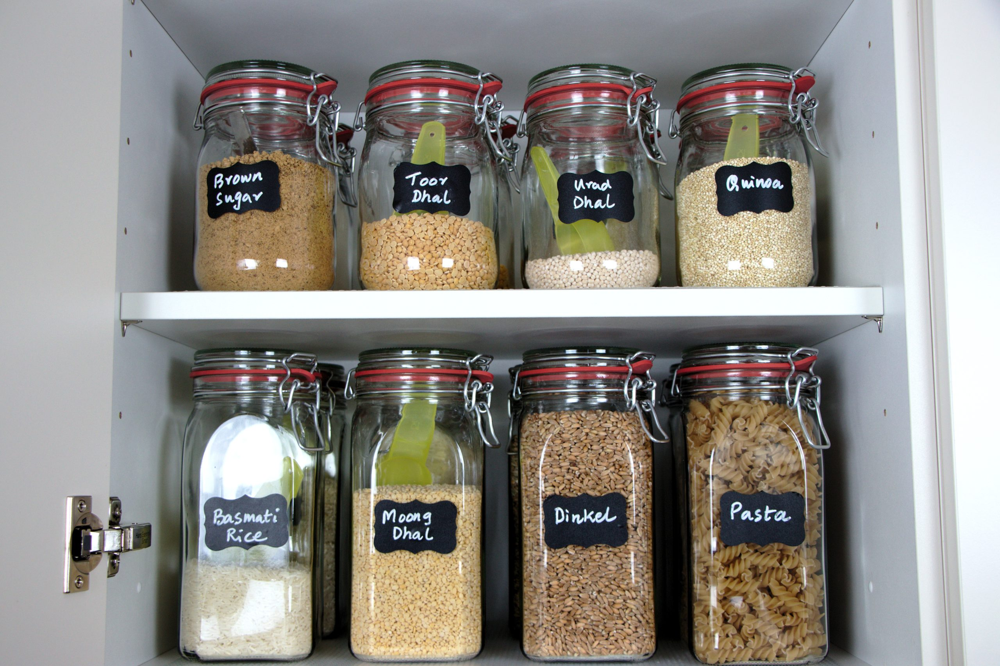

1 / 39

Informatica di Base
Freccia destra o spazio per avanzare. Freccia sinistra per tornare.
input() e convertire tipi con int() e str()?if, if-else, elif?if, if-else, elif?if, if-else, elif?| Tipologia | Durata | Libro | Argomento |
|---|---|---|---|
| teoria | 0.5h | cap. 2.5 | Espressioni e istruzioni |
| teoria | 0.5h | cap. 2.5 | Variabili, assegnamento e stato: sintassi, semantica e tracciamento |
| teoria | 0.5h | cap. 2.6 | `input()` e casting con `int()`, `float()`, `str()` |
| esercitazione | 0.5h | - | Esercizi: variabili, input/output, operazioni su stringhe e numeri |
| teoria | 0.5h | cap. 3.3/3.6 | Tipo `bool`, operatori di confronto e operazioni su stringhe che restituiscono booleani |
| teoria | 0.5h | cap. 3.1/3.2/3.4 | Sintassi e semantica di `if`, `if-else`, `elif` e condizioni annidate |
| teoria | 1h | - | Errori nel codice: leggerli e correggerli |
| esercitazione | 0.5h | - | Testing e casi limite: confrontare output atteso e reale, programmi che sembrano corretti |
| teoria | 1h | cap. 3.5 | Condizioni composte: `and`, `or`, `not`, tabelle di verità e precedenza degli operatori |
| teoria | 0.5h | - | Valutazione lazy e leggi di De Morgan |
La scorsa lezione:
.py in un editor;Per ripassare:
s convertire in ore, minuti, secondi;s e un intero n, stampare il carattere in posizione n insieme al precedente e al successivo.type()Nel modulo 1 abbiamo scritto i primi file .py e introdotto print(). Qui vediamo come organizzare uno script un po' più articolato.
Una convenzione pratica utile per organizzare file un po' meno banali è questa.
In generale uno script tende ad avere tre blocchi:
import di librerie esterne;Esempio schematico:
# autore, data, scopo dello script
import sys
def capitalizza(s):
'''
funzione che data una stringa `s` restituisce la stessa stringa con l'iniziale maiuscola e
il resto dei caratteri minuscoli
'''
return s[0].upper() + s[1:].lower()
# corpo principale
nome = input("Nome: ")
print(capitalizza(nome))rendiamo il codice più leggibile per noi e per chi lo rileggerà dopo.
Vale anche questa osservazione:
# sono commenti;Tutte le operazioni che abbiamo visto fino adesso (lasciamo stare print() per un attimo) sono espressioni: l'interprete Python valuta, la CPU esegue dei calcoli e otteniamo un valore (NB: con un suo un tipo).
Esempi:
3 // 4"ciao".upper()"ciao"+" "+"mondo!"Un linguaggio formale è fatto anche di istruzioni: un comando che provoda un effetto sulla memoria gestita dal programma.
Con la sola REPL possiamo calcolare un valore, ma lo perdiamo subito.
Per esempio:
3 + 4calcola 7, ma cosa succede se vogliamo riutilizzare quel risultato più avanti?
Per esempio vogliamo:
print(23 + 273.15) # Kelvin
print(23 * 9/5 + 32) # FahrenheitNei programmi reali i valori cambiano, devono essere memorizzati e riutilizzati. Senza un modo per conservare i risultati, il programma sarebbe limitato a calcoli “usa e getta”.
Problemi del codice precedente:
Per risolvere questo problema, usiamo le variabili.
temperatura = 23
print(temperatura + 273.15)
print(temperatura * 9/5 + 32)Una variabile è un “contenitore” che permette di:
Forma generale:
nome_variabile = espressioneParti da riconoscere:
= in Python introduce un'assegnazione.Regole pratiche per il nome di una variabile:
_;_;if, for, while.Esempi di nomi validi:
eta
nome_studente
_contatore
voto2Esempi di nomi non validi:
2voto
nome studente
ifAttenzione: in programmazione
=non significa "è uguale a" nel senso della matematica.
Significa invece "assegna alla variabile di sinistra il valore calcolato a destra".
Per questo:
x = 3è corretto, mentre:
3 = xnon ha senso, perchè a sinistra dell'assegnamento deve esserci un nome di variabile, non un numero.
Esempi:
eta = 20
nome = "Luca"
totale = prezzo + ivaQuando Python legge:
somma = 4 + 3succede questo:

Da questo momento quei valori non sono più "persi": sono disponibili attraverso i nomi delle variabili. Quindi una variabile può comparire a destra dentro una nuova espressione.
Per esempio:
y = 3 + 1
x = y + 2Qui Python:
3 + 1 e assegna il risultato a y;y;y + 2;x.x = x + 1non è una formula matematica, ma un aggiornamento di stato:
x;1;x.Prima di procedere, vale la pena distinguere due cose che usiamo entrambe con la parola "programma":
.py. Non cambia mentre lo eseguiamo. Può essere eseguito zero, una o mille volte.Quando tracciamo un programma, non stiamo leggendo il file: stiamo simulando una specifica esecuzione.
Lo stato di un programma non riguarda il testo che scriviamo nel file, ma il programma mentre viene eseguito. È l'insieme dei valori che, in un certo momento dell'esecuzione, sono conservati in memoria e disponibili. In questo modulo, in pratica, lo stato coincide soprattutto con i valori associati alle variabili.
Tracciare un programma significa simulare a mano che cosa succede riga per riga, tenendo traccia dello stato delle variabili e di quello che viene stampato.
Dobbiamo abituarci a distinguere tre cose:
print());per esempio, consideriamo questo programma:
x = 4
print("ciao" + " " + "mondo")
print(x)
y = x + 3Una tabella minima può contenere:
| Passo | Codice sorgente | Stato della memoria | Output |
|---|---|---|---|
| 1 | x = 4 | x → 4 | |
| 2 | print("ciao" + " " + "mondo") | x → 4 | ciao mondo |
| 3 | print(x) | x → 4 | 4 |
| 4 | y = x + 3 | x → 4, y → 7 |
x = 10
y = x // 3
print(y)Traccia:
| Passo | Codice sorgente | Stato della memoria | Output |
|---|---|---|---|
| 1 | x = 10 | x → 10 | |
| 2 | y = x // 3 | x → 10, y → 3 | |
| 3 | print(y) | x → 10, y → 3 | 3 |
input(), e castingTorniamo all'esempio della temperatura:
temperatura = 23
print(temperatura + 273.15)
print(temperatura * 9/5 + 32)Abbiamo un altro problema: se vogliamo eseguire questo script ogni giorno, dobbiamo aprire l'editor e modificare manualmente il valore 23. Vorremmo fare sì che questo valore diventi un parametro del nostro programma in modo da poter eseguire ogni giorno lo script e vedere la temperatura in gradi Kelvin e Farenheit sul nostro schermo.
Abbiamo già visto print() nel modulo 1. Qui introduciamo il suo complemento: input().
input() è un comando utile per leggere un valore scritto dall'utente mentre il programma è in esecuzione. Il testo che mettiamo tra parentesi è il parametro della funzione: serve a mostrare un messaggio sullo schermo, per esempio una domanda o un'istruzione.
input()Forma tipica:
variabile = input("Messaggio: ")Qui:
input(...) legge qualcosa scritto dall'utente;"Messaggio: " è il parametro passato a input();Esempi:
nome = input("Come ti chiami? ")
print(nome)
eta = input("Età: ")
print(eta)Possiamo usare input() anche senza messaggio:
testo = input()input()input() mostra il messaggio, aspetta che l'utente scriva qualcosa e si ferma quando l'utente preme Invio, cioè inserisce un ritorno a capo. Solo a quel punto restituisce il testo letto. Il risultato di input() è sempre una stringa.
nome = input("Come ti chiami? ")
print("Ciao", nome)| Passo | Codice sorgente | Stato della memoria | Output |
|---|---|---|---|
| 1 | nome = input("Come ti chiami? ") | nome → "Ludovica" | Come ti chiami? |
| 2 | print("Ciao", nome) | nome → "Ludovica" | Ciao Ludovica |
Succede questo:
input() restituisce quel testo;Problema:
eta = input("Età: ")
print(eta + 1)Traceback (most recent call last):
File "<stdin>", line 1, in <module>
print(eta + 1)
~~~~^~~
TypeError: can only concatenate str (not "int") to str| Passo | Codice sorgente | Stato della memoria | Output |
|---|---|---|---|
| 1 | eta = input("Età: ") | eta → "33" | Età: |
| 2 | print(eta + 1) | eta → "33" | !!! ERRORE |
Versione corretta:
eta = input("Eta': ")
print(int(eta) + 1)Alcune conversioni comuni:
| Funzione | Effetto |
|---|---|
int("12") | converte in intero |
str(12) | converte in stringa |
float("3.5") | converte in numero decimale |
Questa operazione di conversione di chiama casting.
Ciao, Mario Rossi!.Tra un anno avrai X anni e Un anno fa avevi Y anni.Ciao Anna, potresti avere 20 o 21 anni.3723) e stampa la conversione nel formato: 1 ore, 2 minuti, 3 secondi.M.R.20), e stampa il prezzo scontato e il risparmio.nome = input("Nome: ")
cognome = input("Cognome: ")
print("Ciao, " + nome + " " + cognome + "!")eta = int(input("Età: "))
print("Tra un anno avrai", eta + 1, "anni")
print("Un anno fa avevi", eta - 1, "anni")a = int(input("Primo numero: "))
b = int(input("Secondo numero: "))
print("Somma:", a + b)
print("Prodotto:", a * b)
print("Resto:", a % b)a = float(input("Primo numero: "))
b = float(input("Secondo numero: "))
c = float(input("Terzo numero: "))
print("Media:", (a + b + c) / 3)s = input("Stringa: ")
print("Lunghezza:", len(s))
print("Primo carattere:", s[0])
print("Ultimo carattere:", s[-1])
print("Primi tre caratteri:", s[:3])a = int(input("Primo numero: "))
b = int(input("Secondo numero: "))
print("Valori inseriti:", a, b)
c = a
a = b
b = c
print("Valori scambiati:", a, b)oppure:
a = int(input("Primo numero: "))
b = int(input("Secondo numero: "))
print("Valori inseriti:", a, b)
print("Valori scambiati:", b, a)nome = input("Nome: ")
anno_nascita = int(input("Anno di nascita: "))
anno_corrente = 2026
eta = anno_corrente - anno_nascita
print("Ciao " + nome + ", potresti avere " + str(eta - 1) + " o " + str(eta) + " anni")secondi = int(input("Secondi: "))
ore = secondi // 3600
minuti = (secondi // 60) % 60
sec = secondi % 60
print(ore, "ore")
print(minuti, "minuti")
print(sec, "secondi")nome = input("Nome: ")
cognome = input("Cognome: ")
print(cognome.upper())
print(nome[0].upper() + nome[1:].lower())
print(nome[0].upper() + "." + cognome[0].upper() + ".")s = input("Stringa: ")
print(s[1:-1])prezzo = float(input("Prezzo (€): "))
sconto = int(input("Sconto (%): "))
risparmio = prezzo * sconto / 100
prezzo_scontato = prezzo - risparmio
print("Prezzo scontato:", prezzo_scontato)
print("Risparmio:", risparmio)bool e nuove operazioniFin qui abbiamo lavorato con interi, stringhe e float. Ora introduciamo nuove operazioni che non producono un numero o una stringa, ma un valore binario.
Per esempio possiamo controllare:
Esempi:
3 > 1
2.5 <= 7.0
"anna" == "anna"
"ciao" != "buongiorno"Queste operazioni non restituiscono un intero, un float o una stringa. Restituiscono invece un valore booleano, cioè un valore che rappresenta il risultato di un confronto.
Il tipo bool ha due soli valori possibili:
TrueFalseOperatori di confronto che restituiscono un valore booleano:
| Operazione | Significato | Esempio |
|---|---|---|
== | uguale a | x == 3 |
!= | diverso da | x != 3 |
< | minore di | x < 3 |
<= | minore o uguale a | x <= 3 |
> | maggiore di | x > 3 |
>= | maggiore o uguale a | x >= 3 |
Anche alcune operazioni sulle stringhe restituiscono True oppure False.
Per esempio:
| Operazione | Significato | Esempio |
|---|---|---|
in | controlla se una sottostringa compare dentro una stringa | "cia" in "ciao" |
not in | controlla se una sottostringa non compare dentro una stringa | "x" not in "ciao" |
s.startswith("...") | controlla se la stringa inizia con un certo prefisso | "ciao".startswith("ci") |
s.endswith("...") | controlla se la stringa finisce con un certo suffisso | "ciao".endswith("ao") |
s.isdigit() | controlla se tutti i caratteri sono cifre | "123".isdigit() |
s.isalpha() | controlla se tutti i caratteri sono lettere | "ciao".isalpha() |
Quando tracciamo o eseguiamo il programma, anche questi valori vanno rappresentati nello stato, proprio come interi, stringhe e float.
Con i booleani possiamo decidere il flusso di esecuzione.
Fin qui tutti in tutti i programmi che abbiamo visto le istruzioni vengono eseguite tutte e nell'ordine in cui le abbiamo scritte.
Ma molti problemi chiedono una scelta:
Per gestire queste biforcazioni serve un costrutto condizionale.
ifif [espressione_booleana]:
istruzione-1
istruzione-2
...
istruzione-kif introduce una condizione;if c'è un'espressione booleana;: che aprono un blocco;1 a k va indentato.ifif [espressione_booleana]:
istruzione-1
istruzione-2
...
istruzione-kTrue, esegue il blocco indentato;False, salta quel blocco e continua dopo.x = input("Inserisci la tua età: ")
x = int(x)
if x > 18:
print("Sei maggiorenne")
print("Hai "+str(x)+" anni")| Passo | Codice sorgente | Stato della memoria | Output |
|---|---|---|---|
| 1 | x = input("Inserisci la tua età: ") | x → "33" | Inserisci la tua età: |
| 2 | x = int(x) | x → 33 | |
| 3 | if x > 18: | x → 33 ---> TRUE | |
| 4 | print("Sei maggiorenne") | x → 33 | Sei maggiorenne! |
| 5 | print("Hai "+str(x)+" anni") | x → 33 | Hai 33 anni |
| Passo | Istruzione | Stato della memoria | Output |
|---|---|---|---|
| 1 | x = input("Inserisci la tua età: ") | x → "15" | Inserisci la tua età: |
| 2 | x = int(x) | x → 15 | |
| 3 | if x > 18: | x → 15 ---> FALSE | |
| 4 | print("Hai "+str(x)+" anni") | x → 15 | Hai 15 anni |
NB: tra la prima e la seconda esecuzione il numero di passi eseguiti è cambiato anche se il codice sorgente è rimasto invariato!
if-else, if-elif-else e if annidatiCon if semplice possiamo eseguire un blocco solo quando una condizione è vera. Però spesso vogliamo descrivere anche che cosa succede quando quella stessa condizione è falsa.
Per questo usiamo if-else, che separa esplicitamente due rami alternativi. Quando invece una decisione deve essere presa all'interno di un altro ramo, useremo if annidati.
Se i casi possibili sono più di due ma restano sullo stesso livello, useremo elif.
if-elseif [espressione_booleana]:
istruzione-1
...
istruzione-j
else:
istruzione-1
...
istruzione-kQui ci sono due blocchi alternativi:
if;else.else non ha una condizione propria: raccoglie tutti i casi in cui la condizione dell'if vale False.
if-elseif [espressione_booleana]:
istruzione-1
...
istruzione-j
else:
istruzione-1
...
istruzione-kCon if-else Python:
if;True, esegue il primo blocco;False, esegue il blocco else.Quindi tra i due rami se ne esegue sempre uno solo.
x = input("Inserisci la tua età: ")
x = int(x)
if x > 18:
print("Sei maggiorenne")
else:
print("Sei minorenne")
print("Hai "+str(x)+" anni")| Passo | Istruzione | Stato della memoria | Output |
|---|---|---|---|
| 1 | x = input("Inserisci la tua età: ") | x → "33" | Inserisci la tua età: |
| 2 | x = int(x) | x → 33 | |
| 3 | if x > 18: | x → 33 ---> TRUE | |
| 4 | print("Sei maggiorenne") | x → 33 | Sei maggiorenne! |
| 5 | print("Hai "+str(x)+" anni") | x → 33 | Hai 33 anni |
| Passo | Istruzione | Stato della memoria | Output |
|---|---|---|---|
| 1 | x = input("Inserisci la tua età: ") | x → "15" | Inserisci la tua età: |
| 2 | x = int(x) | x → 15 | |
| 3 | if x > 18: | x → 15 ---> FALSE | |
| 4 | print("Sei minorenne") | x → 15 | Sei minorenne |
| 5 | print("Hai "+str(x)+" anni") | x → 15 | Hai 15 anni |
Non si diventa maggiorenni in tutto il mondo alla stessa età!
In questi casi vorremmo una catena di controlli ordinati.
x = input("Inserisci la tua età: ")
x = int(x)
if x > 21:
print("Sei maggiorenne in USA")
else:
if x > 18:
print("Sei maggiorenne in Italia ma non in USA")
else:
print("Sei minorenne")Questa cascata di if inclusi negli else può diventare poco leggibile...
if-elif-elseif [espressione_booleana]:
istruzione
elif [espressione_booleana]:
istruzione
elif [espressione_booleana]:
istruzione
else:
istruzioneOgni elif aggiunge una nuova condizione.
L'interprete controlla i rami in ordine:
if;elif;else.Quindi:
else copre il caso residuo.Positivo solo se è maggiore di zero.La parola è lunga solo se ha più di 5 caratteri.Pari solo se è divisibile per 2.Pari oppure Dispari a seconda se è divisibile per due o meno.Negativo, Zero o Positivo.Insufficiente se il voto è minore di 18;Sufficiente se è tra 18 e 23;Buono se è tra 24 e 27;Ottimo se è 28 o più.Per esempio: mese 12, anno 2024 → Gennaio 2025.
Nato/a nel secolo scorso.Se il primo è maggiore del secondo, stampa anche Il primo è maggiore. Stampa sempre anche la loro somma.
Parola troppo corta. In entrambi i casi stampa alla fine la lunghezza della parola.risultato:risultato vale "maiuscola";"minuscola".Stampa La parola è: seguito da risultato.
messaggio:messaggio vale "pari";"dispari".Stampa Il numero X è seguito da messaggio.
a e b. Se a è maggiore di b, scambia i valori delle due variabili.Stampa sempre a e b alla fine: i valori usciti devono essere in ordine crescente.
numero = int(input("Inserisci un numero: "))
if numero > 0:
print("Positivo")parola = input("Parola: ")
if len(parola) > 5:
print("La parola è lunga")n = int(input("Numero: "))
if n % 2 == 0:
print("Pari")n = int(input("Numero: "))
if n % 2 == 0:
print("Pari")
else:
print("Dispari")a = int(input("Primo numero: "))
b = int(input("Secondo numero: "))
if a > b:
print(a)
elif b > a:
print(b)
else:
print("I numeri sono uguali")nome1 = input("Primo nome: ")
nome2 = input("Secondo nome: ")
if nome1 <= nome2:
print(nome1)
print(nome2)
else:
print(nome2)
print(nome1)parola = input("Parola: ")
if parola[0].lower() in "aeiou":
print("Inizia con una vocale")
else:
print("Non inizia con una vocale")n = int(input("Numero: "))
if n < 0:
print("Negativo")
elif n == 0:
print("Zero")
else:
print("Positivo")voto = int(input("Voto: "))
if voto < 18:
print("Insufficiente")
elif voto <= 23:
print("Sufficiente")
elif voto <= 27:
print("Buono")
else:
print("Ottimo")parola = input("Parola: ")
if len(parola) < 4:
print("Corta")
elif len(parola) <= 7:
print("Media")
else:
print("Lunga")mese = int(input("Mese (1-12): "))
anno = int(input("Anno: "))
if mese == 12:
mese_succ = 1
anno_succ = anno + 1
else:
mese_succ = mese + 1
anno_succ = anno
if mese_succ == 1:
nome_mese = "Gennaio"
elif mese_succ == 2:
nome_mese = "Febbraio"
elif mese_succ == 3:
nome_mese = "Marzo"
elif mese_succ == 4:
nome_mese = "Aprile"
elif mese_succ == 5:
nome_mese = "Maggio"
elif mese_succ == 6:
nome_mese = "Giugno"
elif mese_succ == 7:
nome_mese = "Luglio"
elif mese_succ == 8:
nome_mese = "Agosto"
elif mese_succ == 9:
nome_mese = "Settembre"
elif mese_succ == 10:
nome_mese = "Ottobre"
elif mese_succ == 11:
nome_mese = "Novembre"
else:
nome_mese = "Dicembre"
print(nome_mese, anno_succ)nome = input("Nome: ")
cognome = input("Cognome: ")
anno = int(input("Anno di nascita: "))
print(nome + " " + cognome)
print(anno)
if anno < 2000:
print("Nato/a nel secolo scorso")a = int(input("Primo numero: "))
b = int(input("Secondo numero: "))
print(a, b)
if a > b:
print("Il primo è maggiore")
print("Somma:", a + b)parola = input("Parola: ")
if len(parola) > 3:
print(parola[1])
else:
print("Parola troppo corta")
print(len(parola))parola = input("Parola: ")
if parola[0].isupper():
risultato = "maiuscola"
else:
risultato = "minuscola"
print("La parola è: " + risultato)n = int(input("Numero: "))
if n % 2 == 0:
messaggio = "pari"
else:
messaggio = "dispari"
print("Il numero " + str(n) + " è " + messaggio)a = int(input("a: "))
b = int(input("b: "))
if a > b:
tmp = a
a = b
b = tmp
print(a, b)Per ciascun programma e input indicato, cerca di predire l'output del programma con gli input proposti e compila la tabella con lo stato della memoria.
T1.
x = int(input("x: "))
y = int(input("y: "))
z = x + y
if z > 10:
x = x * 2
etichetta = "grande"
elif z > 0:
x = x + 1
etichetta = "medio"
else:
etichetta = "piccolo"
print(etichetta + ": " + str(x))3, 46, 7Input: x = 3, y = 4
| Istruzione | Stato memoria | Output |
|---|---|---|
x = int(input("x: ")) | x=3 | |
y = int(input("y: ")) | x=3, y=4 | |
z = x + y | x=3, y=4, z=7 | |
if z > 10: → False | x=3, y=4, z=7 | |
elif z > 0: → True | x=3, y=4, z=7 | |
x = x + 1 | x=4, y=4, z=7 | |
etichetta = "medio" | x=4, y=4, z=7, etichetta="medio" | |
print(etichetta + ": " + str(x)) | medio: 4 |
Input: x = 6, y = 7
| Istruzione | Stato memoria | Output |
|---|---|---|
x = int(input("x: ")) | x=6 | |
y = int(input("y: ")) | x=6, y=7 | |
z = x + y | x=6, y=7, z=13 | |
if z > 10: → True | x=6, y=7, z=13 | |
x = x * 2 | x=12, y=7, z=13 | |
etichetta = "grande" | x=12, y=7, z=13, etichetta="grande" | |
print(etichetta + ": " + str(x)) | grande: 12 |
T2.
s = input("Parola: ")
n = len(s)
if n > 4:
s = s[0].upper() + s[1:]
risultato = s + " (" + str(n) + ")"
else:
risultato = s.upper()
print(risultato)"python""ciao"Input: "python"
| Istruzione | Stato memoria | Output |
|---|---|---|
s = input("Parola: ") | s="python" | |
n = len(s) | s="python", n=6 | |
if n > 4: → True | s="python", n=6 | |
s = s[0].upper() + s[1:] | s="Python", n=6 | |
risultato = s + " (" + str(n) + ")" | s="Python", n=6, risultato="Python (6)" | |
print(risultato) | Python (6) |
Input: "ciao"
| Istruzione | Stato memoria | Output |
|---|---|---|
s = input("Parola: ") | s="ciao" | |
n = len(s) | s="ciao", n=4 | |
if n > 4: → False | s="ciao", n=4 | |
risultato = s.upper() | s="ciao", n=4, risultato="CIAO" | |
print(risultato) | CIAO |
T3.
a = int(input("a: "))
b = int(input("b: "))
if a > b:
tmp = a
a = b
b = tmp
diff = b - a
if diff > 5:
messaggio = "distanti"
else:
messaggio = "vicini"
print(str(a) + " " + str(b) + " - " + messaggio)9, 2Input: a = 9, b = 2
| Istruzione | Stato memoria | Output |
|---|---|---|
a = int(input("a: ")) | a=9 | |
b = int(input("b: ")) | a=9, b=2 | |
if a > b: → True | a=9, b=2 | |
tmp = a | a=9, b=2, tmp=9 | |
a = b | a=2, b=2, tmp=9 | |
b = tmp | a=2, b=9, tmp=9 | |
diff = b - a | a=2, b=9, tmp=9, diff=7 | |
if diff > 5: → True | a=2, b=9, tmp=9, diff=7 | |
messaggio = "distanti" | a=2, b=9, diff=7, messaggio="distanti" | |
print(str(a) + " " + str(b) + " - " + messaggio) | 2 9 - distanti |
T4.
n = int(input("n: "))
print("Inizio")
if n < 0:
print("Negativo")
n = -n
print("Valore assoluto: " + str(n))
elif n == 0:
print("Zero")
else:
print("Positivo")
n = n * n
print("Fine: " + str(n))-34Input: -3
| Istruzione | Stato memoria | Output |
|---|---|---|
n = int(input("n: ")) | n=-3 | |
print("Inizio") | n=-3 | Inizio |
if n < 0: → True | n=-3 | |
print("Negativo") | n=-3 | Negativo |
n = -n | n=3 | |
print("Valore assoluto: " + str(n)) | n=3 | Valore assoluto: 3 |
print("Fine: " + str(n)) | n=3 | Fine: 3 |
Input: 4
| Istruzione | Stato memoria | Output |
|---|---|---|
n = int(input("n: ")) | n=4 | |
print("Inizio") | n=4 | Inizio |
if n < 0: → False | n=4 | |
elif n == 0: → False | n=4 | |
else: print("Positivo") | n=4 | Positivo |
n = n * n | n=16 | |
print("Fine: " + str(n)) | n=16 | Fine: 16 |
T5.
a = int(input("a: "))
b = int(input("b: "))
print("a=" + str(a) + " b=" + str(b))
if a > b:
print("a è maggiore")
diff = a - b
print("Differenza: " + str(diff))
else:
print("b è maggiore o uguale")
diff = b - a
print("Distanza: " + str(diff))a = 7, b = 2a = 3, b = 3Input: a = 7, b = 2
| Istruzione | Stato memoria | Output |
|---|---|---|
a = int(input("a: ")) | a=7 | |
b = int(input("b: ")) | a=7, b=2 | |
print("a=" + str(a) + " b=" + str(b)) | a=7, b=2 | a=7 b=2 |
if a > b: → True | a=7, b=2 | |
print("a è maggiore") | a=7, b=2 | a è maggiore |
diff = a - b | a=7, b=2, diff=5 | |
print("Differenza: " + str(diff)) | a=7, b=2, diff=5 | Differenza: 5 |
print("Distanza: " + str(diff)) | a=7, b=2, diff=5 | Distanza: 5 |
Input: a = 3, b = 3
| Istruzione | Stato memoria | Output |
|---|---|---|
a = int(input("a: ")) | a=3 | |
b = int(input("b: ")) | a=3, b=3 | |
print("a=" + str(a) + " b=" + str(b)) | a=3, b=3 | a=3 b=3 |
if a > b: → False | a=3, b=3 | |
else: print("b è maggiore o uguale") | a=3, b=3 | b è maggiore o uguale |
diff = b - a | a=3, b=3, diff=0 | |
print("Distanza: " + str(diff)) | a=3, b=3, diff=0 | Distanza: 0 |
Abbiamo scritto dei programmi! Ma saranno corretti?
Caso 1: il programma genera un errore
Caso 2: il programma termina l'esecuzione senza generale alcun errore
Un messaggio di errore contiene almeno tre informazioni utili:
| Informazione | Domanda |
|---|---|
| tipo di errore | che genere di problema e`? |
| riga segnalata | dove si manifesta? |
| contesto | quale operazione stava tentando Python? |
Esempi frequenti:
| Errore | Causa tipica |
|---|---|
SyntaxError | sintassi non valida |
NameError | nome di variabile non definito |
TypeError | operazione tra tipi incompatibili |
ValueError | conversione non possibile |
Per ciascun programma: esegui il codice, individua il tipo di errore che produce e la riga in cui compare, poi spiega perché si verifica e correggi il codice di conseguenza.
E1.
nome = input("Nome: ")
cognome = input("Cognome: ")
eta = input("Età: ")
print("Ciao " + nome + " " + cognome + "!")
print("Tra dieci anni avrai " + eta + 10 + " anni.")E2.
anno_nascita = input("Anno di nascita: ")
anno_corrente = 2025
eta = anno_corrente - anno_nascita
print("Hai circa " + str(eta) + " anni.")E3.
parola = input("Parola: ")
lunghezza = len(parola)
print("La parola ha " + lunghezza + " lettere.")E4.
x = int(input("Numero: "))
if x > 0:
segno = "positivo"
elif x < 0:
segno = "negativo"
print("Il numero è " + segno)Anche se il programma non genera un errore, potrebbe comunque fare la cosa sbagliata: non basta che l'esecuzione si concluda per dire che "funziona". Bisogna confrontare input e output attesi su casi scelti apposta.
Consideriamo questo programma, scritto per stampare un numero con il suo segno esplicito (+7, -3, 0):
n = int(input("Numero: "))
if n > 0:
segno = "+"
else:
segno = "-"
print(segno + str(n))Proviamolo su diversi input:
| Input | Output atteso | Output reale |
|---|---|---|
7 | +7 | ? |
-3 | -3 | ? |
0 | 0 | ? |
Sembra ragionevole: il ramo if (se maggiore di 0) aggiunge +, il ramo else aggiunge -.
Ma str(-3) restituisce già "-3": concatenarci davanti un altro "-" produce "--3". E per 0, il ramo else produce "-0" invece di "0".
Il programma non genera nessun errore, ma l'output è sbagliato per tutti i numeri non positivi.
Perché succede: str(n) su un numero negativo include già il segno meno. Aggiungere "-" davanti raddoppia il segno.
Correzione:
n = int(input("Numero: "))
if n > 0:
print("+" + str(n))
elif n < 0:
print(str(n)) # str(n) contiene già il segno
else:
print("0")Per ognuno degli esercizi seguenti il metodo è sempre lo stesso:
Il programma riceve un numero intero e stampa "pari" se è pari, "dispari" se è dispari.
| Input | Output atteso | Output reale |
|---|---|---|
0 | ||
3 | ||
-4 | ||
7 |
n = int(input("Numero: "))
if n > 0 and n % 2 == 0:
print("pari")
else:
print("dispari")Il programma riceve un voto e stampa "promosso" se è almeno 18, "non promosso" altrimenti.
| Input | Output atteso | Output reale |
|---|---|---|
15 | ||
30 | ||
18 |
voto = int(input("Voto: "))
if voto >= 18:
print("promosso")
if voto <= 18:
print("non promosso")Il programma riceve un numero intero e stampa "positivo" se è maggiore di zero, "grande" se è maggiore di 10, "non positivo" negli altri casi.
| Input | Output atteso | Output reale |
|---|---|---|
5 | ||
15 | ||
-2 |
x = int(input("x: "))
if x > 0:
print("positivo")
elif x > 10:
print("grande")
else:
print("non positivo")Il programma riceve un intero e stampa "fizz" se è divisibile per 3, "buzz" se è divisibile per 5, "fizzbuzz" se è divisibile per entrambi, il numero stesso negli altri casi.
| Input | Output atteso | Output reale |
|---|---|---|
1 | ||
3 | ||
5 | ||
15 | ||
9 |
Scrivi il programma e testane il funzionamento.
Fino adesso abbiamo visto operazioni che confrontano ad esempio numeri interi e restituiscono un valore booleano. Ma esistono anche operazioni che agiscono direttamente su valori booleani.
In particolare consideriamo tre operazioni:
andornotand, or, notForme generali:
espressione_booleana and espressione_booleanaespressione_booleana or espressione_booleananot espressione_booleanaQueste operazioni si usano per costruire condizioni più complesse a partire da condizioni più semplici.
Esempi:
x > 0 and x < 10
eta >= 18 or ha_permesso
not nome == "Ludovica"and, or, notQueste operazioni prendono in ingresso valori booleani e restituiscono a loro volta un valore booleano.
andA and Bvale True solo quando entrambe le condizioni sono vere. Se almeno una delle due è falsa, il risultato è False.
Per esempio:
x > 0 and x < 10significa: "x è maggiore di 0 e contemporaneamente minore di 10".
and| x | y | x and y |
|---|---|---|
False | False | False |
False | True | False |
True | False | False |
True | True | True |
orA or Bvale True quando almeno una delle due condizioni è vera. Vale False solo quando sono false entrambe.
Per esempio:
voto < 18 or voto > 30significa: "il voto è fuori dall'intervallo valido", potrebbe esserlo perché minore di 18 o perché maggiore di 30.
or| x | y | x or y |
|---|---|---|
False | False | False |
False | True | True |
True | False | True |
True | True | True |
notnot Ainverte il valore booleano della condizione:
A vale True, allora not A vale False;A vale False, allora not A vale True.Per esempio:
not x > 0significa: "non è vero che x è maggiore di 0", equivale a x<=0.
not| x | not x |
|---|---|
False | True |
True | False |
Per ciascuna espressione e valori di variabili indicati, calcola il risultato (True o False) senza eseguire il codice.
x = 5, y = 3 → x > 0 and y > 0x = -2, y = 4 → x > 0 and y > 0x = -2, y = 4 → x > 0 or y > 0x = -2, y = -1 → x > 0 or y > 0n = 7 → not n > 10n = 15 → not n > 10eta = 20, ha_documento = False → eta >= 18 and ha_documentoeta = 16, ha_documento = True → eta >= 18 or ha_documento| # | Variabili | Espressione | Sviluppo | Risultato |
|---|---|---|---|---|
| 1 | x=5, y=3 | x > 0 and y > 0 | True and True | True |
| 2 | x=-2, y=4 | x > 0 and y > 0 | False and True | False |
| 3 | x=-2, y=4 | x > 0 or y > 0 | False or True | True |
| 4 | x=-2, y=-1 | x > 0 or y > 0 | False or False | False |
| 5 | n=7 | not n > 10 | not False | True |
| 6 | n=15 | not n > 10 | not True | False |
| 7 | eta=20, ha_documento=False | eta >= 18 and ha_documento | True and False | False |
| 8 | eta=16, ha_documento=True | eta >= 18 or ha_documento | False or True | True |
Nel range se è compreso tra 1 e 100 (estremi inclusi), Fuori range altrimenti.Almeno una è vuota se almeno una delle due ha lunghezza zero, altrimenti stampa Entrambe non vuote.Fuori range se è minore di 0 oppure maggiore di 10. Poi riscrivi la stessa condizione usando not e and.Ciao Maria, oggi hai 10 anni, tra 8 anni ne avrai 18 come desideri
n = int(input("Numero: "))
if n >= 1 and n <= 100:
print("Nel range")
else:
print("Fuori range")anno = int(input("Anno: "))
if (anno % 4 == 0 and anno % 100 != 0) or anno % 400 == 0:
print("Bisestile")
else:
print("Non bisestile")s1 = input("Prima stringa: ")
s2 = input("Seconda stringa: ")
if len(s1) == 0 or len(s2) == 0:
print("Almeno una è vuota")
else:
print("Entrambe non vuote")n = int(input("Numero: "))
if n < 0 or n > 10:
print("Fuori range")Con not e and:
if not (n >= 0 and n <= 10):
print("Fuori range")Le due condizioni sono equivalenti per le leggi di De Morgan: not (A and B) ↔ not A or not B.
nome = input("Nome: ")
eta_attuale = int(input("Età attuale: "))
eta_desiderata = int(input("Età desiderata: "))
anni_mancanti = eta_desiderata - eta_attuale
print("Ciao " + nome + ", oggi hai " + str(eta_attuale) + " anni, tra " + str(anni_mancanti) + " anni ne avrai " + str(eta_desiderata) + " come desideri")Con validazione degli input:
nome = input("Nome: ")
eta_attuale = int(input("Età attuale: "))
eta_desiderata = int(input("Età desiderata: "))
if eta_attuale <= 0 or eta_desiderata <= 0:
print("Errore: le età devono essere maggiori di zero.")
elif eta_attuale >= eta_desiderata:
print("Errore: l'età attuale deve essere minore di quella desiderata.")
else:
anni_mancanti = eta_desiderata - eta_attuale
print("Ciao " + nome + ", oggi hai " + str(eta_attuale) + " anni, tra " + str(anni_mancanti) + " anni ne avrai " + str(eta_desiderata) + " come desideri")Quando una condizione contiene più operatori, Python non legge tutto "da sinistra a destra" in modo piatto. Usa invece un ordine di precedenza, cioè alcune operazioni vengono valutate prima di altre.
Nelle espressioni che useremo più spesso vale questa regola pratica:
<, <=, ==, !=, >, >=;not;and;or.Quindi not ha precedenza su and, e and ha precedenza su or.
Esempio:
True or False and Falsenon si legge come:
(True or False) and Falsema come:
True or (False and False)perché and viene valutato prima di or.
Un altro esempio:
not x > 0 and y > 0si legge come:
(not (x > 0)) and (y > 0)Come in matematica, con le parentesi possiamo influenzare l'ordine delle operazioni.
Confronta:
A or B and Ccon:
(A or B) and CNon sono in generale equivalenti.
Gli operatori and e or non valutano sempre entrambe le parti dell'espressione. Python si ferma appena il risultato finale è già determinato.
Questo comportamento si chiama valutazione lazy oppure short-circuit.
Partiamo da questo esempio:
x = 5
if x > 0 and y > 0:
print("Entrambi i numeri positivi!")Questo codice genera errore, perché y non è definita.
Ora consideriamo questo caso:
x = 5
if x > 0 or y > 0:
print("Almeno un numero positivo!")Perchè non genera errore?
x > 0 | y > 0 | x > 0 or y > 0 |
|---|---|---|
True | False | True |
True | True | True |
x > 0 vale già True, e questo basta a rendere vera tutta l'espressione con or. Di conseguenza Python non valuta y > 0.
In generale:
A or B, se A vale True, Python non valuta B;A and B, se A vale False, Python non valuta B.Le condizioni composte compaiono molto presto nei programmi.
Per esempio, se automatizzassimo il controllo degli accessi in discoteca il programma potrebbe somigliare a qualcosa come:
if eta >= 18 and ha_documento:
print("Accesso consentito")Qui stiamo combinando due condizioni semplici:
eta >= 18ha_documentocon l'operatore and.
Quando entra in gioco not, la lettura diventa meno immediata.
Supponiamo che il programma, invece che lasciare entrare, voglia stampare "Accesso non consentito" se:
if eta < 18 or not ha_documento:
print("Accesso non consentito")Ma questo deve essere equivalente anche alla negazione della condizione precedente!
if not (eta >= 18 and ha_documento):
print("Accesso non consentito")Le leggi di De Morgan servono a riscrivere negazioni di condizioni composte:
| Forma | Equivalente |
|---|---|
not (A and B) | not A or not B |
not (A or B) | not A and not B |
Esempio:
not (x > 0 and y > 0)equivale a:
not x > 0 or not y > 0ovvero:
x <= 0 or y <= 0Riscrivi ciascuna condizione in forma equivalente usando le leggi di De Morgan, poi verifica con un esempio numerico.
not (x > 0 and y > 0)not (a == b or c == d)not (eta >= 18 and ha_documento)Prima di scrivere il codice conviene costruire una tabella dei casi: elencare esplicitamente tutte le combinazioni di input rilevanti e il comportamento atteso per ciascuna.
Questo serve a non dimenticare casi limite e a capire di quanti rami ha bisogno il programma.
Esempio: esercizio 13 — nome, età attuale, età da raggiungere.
Quali combinazioni di input esistono?
Prima versione della tabella — solo i casi "normali":
| Confronto | Esempio | Output atteso |
|---|---|---|
eta_desiderata > eta_attuale | attuale=10, target=18 | Ciao Maria, oggi hai 10 anni, tra 8 anni ne avrai 18 come desideri |
eta_desiderata == eta_attuale | attuale=18, target=18 | Ciao Maria, hai già 18 anni come desideri |
eta_desiderata < eta_attuale | attuale=25, target=18 | Ciao Maria, hai già superato i 18 anni |
La tabella mostra che servono tre rami: if, elif, else. Costruirla prima evita di accorgersi del caso == solo dopo aver scritto il codice.
Ma cosa succede se l'utente inserisce un'età negativa?
| Input | Esempio | Comportamento del programma | Corretto? |
|---|---|---|---|
eta_attuale < 0 | attuale=-5, target=18 | entra nel ramo > | no |
eta_desiderata < 0 | attuale=10, target=-3 | entra nel ramo < | no |
| entrambe negative, uguali | attuale=-5, target=-5 | entra nel ramo == | no |
Il programma non genera errori ma produce output privi di senso. Per gestirlo correttamente bisogna aggiungere una validazione degli input prima di tutto il resto:
nome = input("Nome: ")
eta_attuale = int(input("Età attuale: "))
eta_desiderata = int(input("Età desiderata: "))
if eta_attuale < 0 or eta_desiderata < 0:
print("Errore: le età non possono essere negative.")
elif eta_desiderata > eta_attuale:
anni_mancanti = eta_desiderata - eta_attuale
print("Ciao " + nome + ", oggi hai " + str(eta_attuale) + " anni, tra " + str(anni_mancanti) + " anni ne avrai " + str(eta_desiderata) + " come desideri")
elif eta_desiderata == eta_attuale:
print("Ciao " + nome + ", hai già " + str(eta_desiderata) + " anni come desideri")
else:
print("Ciao " + nome + ", hai già superato i " + str(eta_desiderata) + " anni")La validazione dell'input è sempre il primo controllo da fare.
Gli altri rami assumono che i dati siano validi — ma solo perché lo abbiamo già verificato.
| Età attuale | Età desiderata | Output atteso |
|---|---|---|
eta_attuale <= 0 | eta_desiderata <= 0 | INPUT NON VALIDO |
eta_desiderata > 0 | INPUT NON VALIDO | |
eta_attuale > 0 | eta_desiderata <= 0 | INPUT NON VALIDO |
eta_desiderata < eta_attuale | Ciao Maria, hai già superato i 18 anni | |
eta_desiderata == eta_attuale | Ciao Maria, hai già 18 anni come desideri | |
eta_desiderata > eta_attuale | Ciao Maria, oggi hai 10 anni, tra 8 anni ne avrai 18 come desideri |